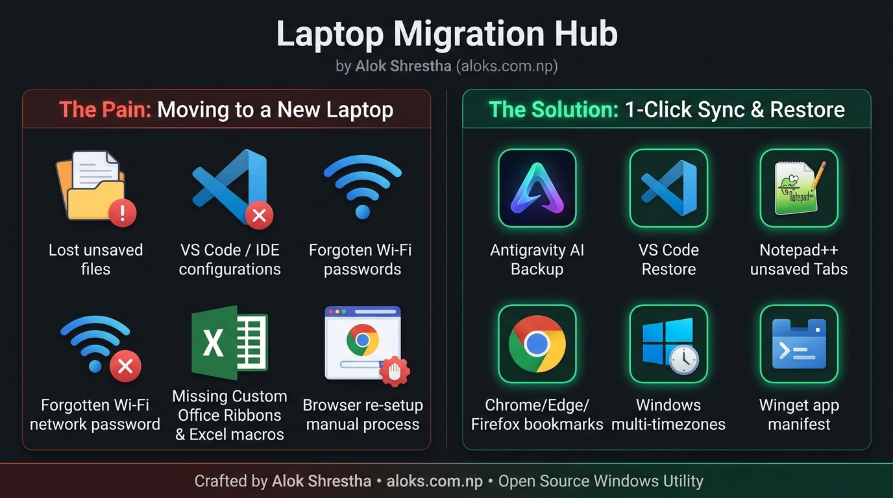

Laptop Migration Hub 💻
Zero-downtime Windows environment migration. Back up and restore developer IDE unsaved buffers, Microsoft Office custom ribbons & macros, multi-profile browsers, multi-timezone clocks, and Wi-Fi networks in 1 click.

Deep Capabilities & Supported Software
IDEs & Code Editors
Preserves unsaved scratch buffers, hot exits, UI layouts (state.vscdb), keybindings, and extension metadata for Antigravity AI, VS Code, and Notepad++.
Microsoft Office Customizations
Captures custom Ribbon tabs & Quick Access Toolbars (*.officeUI, *.qat), personal macros (PERSONAL.XLSB), and Word Normal.dotm.
Multi-Profile Web Browsers
Exports and synchronizes saved bookmarks, reading lists, preferences, and extension states across multi-profile Google Chrome, Edge, and Mozilla Firefox.
Multi-Timezone Clocks
Extracts Windows additional clocks (e.g. AEST, CST), international regional formats, and system timezone registry settings.
Wi-Fi Network Profiles
Safely exports all saved Wi-Fi network SSIDs and authentication keys for instant reconnection on your new machine.
Winget Package Manifest
Exports an automated inventory of your installed software for 1-click batch reinstallation via Windows Package Manager.
🚀 How It Works (3 Easy Steps)
Select & Export on Old Laptop
Open Laptop Migration Hub, choose the components you want to back up, and click Start Backup. Everything is safely archived to your OneDrive or USB drive.
100% Offline & Transparent
All backups are stored as plain JSON, XML, and directory archives with high-precision file logs (migration.log). Zero cloud vendor lock-in.
Smart Restore on New Laptop
Open the app on your new machine and select the backup folder. It automatically switches to Restore Mode, filtering out unbacked items and providing Winget install helpers.
Crafted by Alok Shrestha
Need help, have a question, or want an application added to the migration matrix?